Classification of border points on old cadastral plans¶
Gwenaëlle Salamin (Exolabs), Clémence Herny (Exolabs), Alessandro Cerioni (Canton of Geneva), Roxane Pott (swisstopo), Swann Destouches (Uzufly)
Proposed by the Canton of Fribourg - PROJ-BORDERPOINTS
March 2024 to September 2024 - Published December 3, 2024
This work by STDL is licensed under CC BY-SA 4.0


Abstract: Currently, all the lines delineating ground parcels have been approximately digitized in the canton of Fribourg, but the border points at the intersections have never been materialized in a dataset. However, it is the points and not the lines that have legal value. Besides, their nature must be known before they can be validated at the federal level. As 50,000 points are currently missing, an automatic classification based on historical cadastral plans would save the Canton a lot of time.
The STDL tested two methods to classify the nature of border points: instance segmentation with a match between detections and approximate border points, and image classification on the neighborhood of each approximate point. Both methods achieved a balanced f1 score of over 0.75 on a test dataset. However, the method based on instance segmentation was proved more versatile for the wide variety of configuration that can be encountered on historical cadastral plans. Consequently, the expert examined only those results at the scale of entire plans and he declared himself satisfied with the quality of the classification.
1. Introduction¶
In some municipalities in the Canton of Fribourg, the cadastral surveying has not yet been fully approved by the land registry. The parcel borderlines were digitized manually based on old cadastral plans, but not the border points. Approximately 50,000 points are missing, causing errors in automatic data consistency checks and making it difficult for users to understand the data. Many of the missing boundary points can be identified on old paper plans from the late 19th century, but manually digitizing and classifying them would represent a considerable amount of work.
Automatic vectorization of maps and diagram has been a topic of research for the past 30 years1, 2 as these historical documents contain invaluable information on territorial organization. This task is very challenging because the large variety of symbols and plan origin, as well as the quality of the drawings, make it difficult to develop a generic method.
The text retrieval on diagrams has quickly attracted a lot of attention1 and some attempts were made to extract surface areas such as land cover and parcels from maps based on image processing2, 3. The application of semantic segmentation for the classification of map areas greatly improved map vectorization2. For Ignjatic et al. (2018)4, deep neural networks are the state-of-the-art for object recognition on cadastral map and their performance should allow their full integration in the domain.
Liu et al. (2017)5 introduced raster-to-vector transformation methods, employing AI-driven junction detection and classification to improve the accuracy of edge extraction from floor plans. However, this article is rather an exception, as most of the vectorization works start with lines, then work toward other elements. Franken et al. (2021)6 used AI-driven approaches for image enhancement, line detection, and handwritten sketch interpretation to automate the extraction of border points, achieving a high level of accuracy in reconstructing parcel boundaries of the Dutch cadastral plans. This work demonstrates how AI, particularly in image recognition, can resolve challenges posed by the inconsistent quality of hand-drawn cadastral maps. Oliveira et al. (2019)7 also use a deep neural network to vectorize lines. From the vectorized lines, they determine the parcel polygons and the text position.
Deep learning can also prove valuable for symbol extraction, but its application remains relatively uncommon. García-Molsosa et al. (2021)8 demonstrated its potential for segmenting archaeological features, such as conventional signs and line drawings, and Qui et al. (2023)9 achieved very good results for the classification of geological symbols with their convolutional recursive neural network.
In this project, we developed two algorithms for classifying the border points in the Canton of Fribourg based on old georeferenced cadastral plans. The first is based on the STDL object detector, a deep learning tool for instance segmentation. The second tests if the task can also be performed with a lighter machine learning model for symbol classification. The final product is a geographical dataset with the classified border points.
2. Data¶
2.1 Cadastral plans¶
Figure 1: Cadastral plan of Neirivue at scale 1:500 dating 1906.
The cadastral plans were produced by various geometers from 1853 to 1911. Some annotations were added later to indicate changes in the parcel borders.
For this proof of concept, 30 plans are considered: 6 at 1:500 scale, 10 at 1:1000 scale, 10 at 1:2000 scale, and 14 at 1:4000 scale. They were manually georeferenced in the EPSG:2056 coordinate system (Fig. 1). They are saved in GeoTIFF format as a single band with a color map.
To be used by the detection and classification algorithms, the cadastral plans were first transformed from a single band with a color map to RGB images. These were renamed with a plan number and their original name.
For the latter steps of the algorithms, to comply with the naming scheme of the STDL object detector, produced tiles must have an identifier consisting of three numbers: the plan number, the latitude, and the longitude. The zoom level is usually used for the identifier, but as there can be many overlaps of plans at the same scale, duplicated names for slightly shifted tiles would be possible. The plan number was then preferred.
2.2 Approximate border points¶
Border points are landmarks used by geometers to cadaster parcel borders. They are the backbone of Swiss cadastral surveying. Borderlines are subsequently drawn between the surveyed border points.
Figure 2: Parcels with missing border points over the Canton of Fribourg.
The parcels with missing border points can be identified from the cadastral survey dataset (Fig. 2). They were created from lines that were digitized manually on old cadastral plans 10 years ago. The border points were never digitized, but their approximate position can be deduced from the lines, as each line end is a border point.
Several cadastral plans can correspond to a same area, and a selection was made for the line digitization. Some discrepancies therefore exist between some plans and approximated points, with some plan symbols not corresponding to any points and inversely.
The border points are filtered to keep only those overlapping a plan. A unique id is produced for each point based on a generated point number and the point coordinates rounded to one meter. A combo id is produced by combining the plan id and the point id to deal with points intersecting multiple plans.
2.3 Ground truth¶
2.3.1 Areas of interest¶
Figure 3: Location of the areas of interest over the Canton of Fribourg with the indication of the original plan scale.
Considering the large amount of work and low variation in style that would represent the full digitization of border points on one entire plan, small areas of interest (AOIs) were defined over several plans. They provide a panel of representative plan areas supplied by different geometers at different scales. Figure 3 shows the 35 AOIs spreading over 30 plans.
2.3.2 Digitized border points¶
For the various needs of the developed methods, three versions of the ground truth (GT) were produced:
-
Polygon GT:
- border points of the AOIs delineated and classified by the expert in the form of polygons (Fig. 4),
- used to train and test the instance segmentation model.
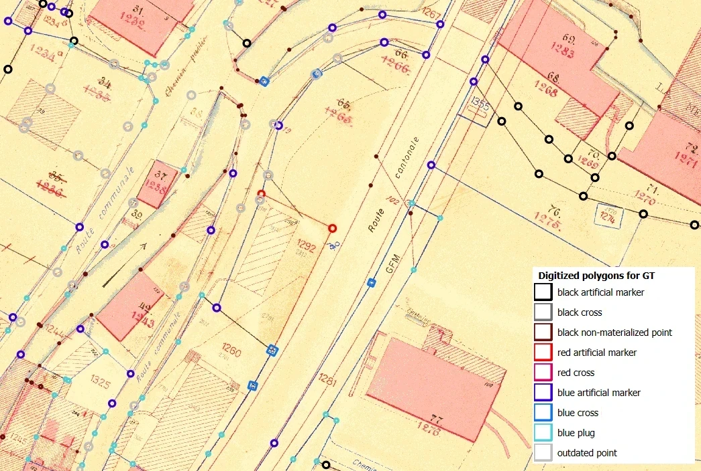
Figure 4: Digitized area in Neirivue with the polygons of the GT colored by class. -
Point GT, version a (GTa):
- approximate border points, for which the localization was improved, classified by a spatial join with the polygon GT and by our team (Fig. 5),
- used to assess the results of the instance segmentation model after the post-processing steps.
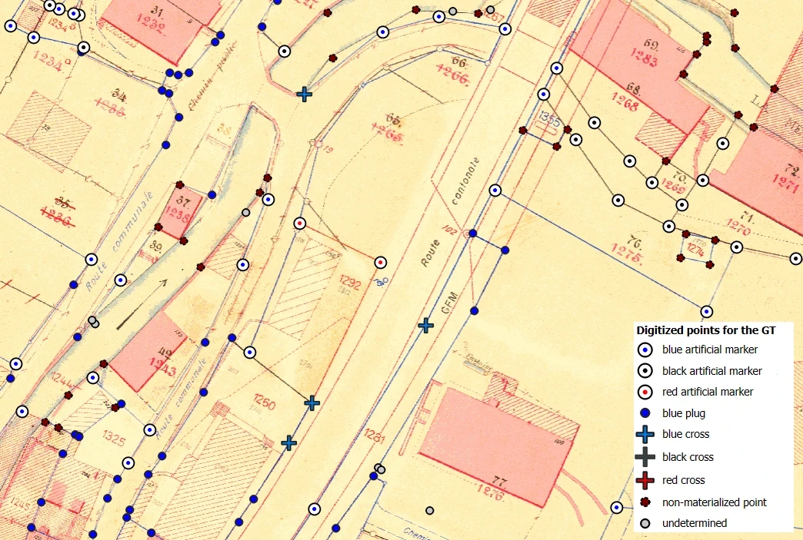
Figure 5: Digitized area in Neirivue with the points of the GT with a different symbol for each class. -
Point GT, version b (GTb):
- GTa with five additional zones digitized to decrease some class confusions in the symbol classification,
- used to train and assess the symbol classification model.
The border points were classified based on their nature and color. The different natures of border points are defined in the official model. The following types are considered in this project with the numbering defined by the expert:
- Artificial marker
- Plugs
- Cross
- Post
- Non-materialized point
The color of certain border point natures is important because it informs on how the point was created. The following possibilities were present on the cadastral plans:
- Black: it is the original point,
- Red: this point was mutated, i.e. the parcel limit changed and the point was created or relocated, before 1970,
- Blue: this point was mutated after 1970.
The information about the nature and the color of the points were aggregated. For the colors, the first letter of the French translation was used (black=n, blue=b, red=r). Consequently, the following categories are present in the dataset:
| Black (n) | Blue (b) | Red (r) | |
|---|---|---|---|
| 1. Artificial marker | 1n 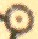 | 1b 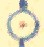 | 1r 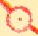 |
| 2. Plug | - | 2b 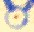 | - |
| 3. Cross | 3n 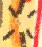 | 3b 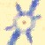 | 3r 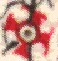 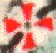 |
| 4. Post | - | - | - |
| 5. Non-materialized point | 5n 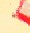 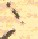 | - | - |
Table 1: Acronym of the border point classes with illustrations of the corresponding symbols.
As only the artificial markers and the crosses exists in several colors, it makes 8 classes (Table 1). In the polygon GT, the class "0s" was added for outdated points, struck in red, because of the high risk of confusion with valid points. In GTa and GTb, a class was added for undetermined points, i.e. points that are not overlapping with any symbol.
| Black | Blue | Red | |
|---|---|---|---|
| 1. Artificial marker | 202 | 398 | 61 |
| 2. Plug | - | 170 | - |
| 3. Cross | 6 | 77 | 166 |
| 4. Post | - | - | - |
| 5. Non-materialized point | 124 | - | - |
Table 2: Number of ground truth points digitized as polygons and classified based on nature and color by the expert.
The expert digitized 1,204 border points (Table 2) and 194 outdated points for the training and test of the instance segmentation model.
| Black | Blue | Red | |
|---|---|---|---|
| 1. Artificial marker | 175(a) / 182(b) | 304(a) / 307(b) | 48 |
| 2. Plug | - | 158 | - |
| 3. Cross | 3 | 68 | 159 |
| 4. Post | - | - | - |
| 5. Non-materialized point | 218(a) / 242(b) | - | - |
Table 3: Number of points in the ground truth by nature and color once transformed from polygons to points in the original GT (a) and with five additional zones added for the symbol classification procedure (b).
The point GT contains 1,254 points in version a, including 121 undetermined ones, and 1,491 points in version b, including 324 undetermined ones (Table 3).
Because of the small quantity of black crosses over the canton and in the ground truth (Table 2 and 3), this category is filtered out of the dataset in preprocessing.
2.4 swissTLM3D¶
The product swissTLM3D is the Swiss large-scale topographic landscape model produced by the Federal Office of Topography. In post-processing, we used the stagnant water from the land cover layer and the building layer for border point classification. Indeed, border points intersecting these features have a very high chance of being non-materialized points. We consider that those features are quite stable through time and the discrepancies between the point dataset and the swissTLM3D were small enough to be ignored.
3. Metrics¶
To evaluate the results, the reliability of the detections, namely the precision P, and the exhaustiveness, namely the recall R, were computed for each class k and globally. They were then combined to obtain the f1 score. The respective formulas are presented below:
- \(P_k = \frac{TP_k}{TP_k + FP_k}\)
- \(R_k = \frac{TP_k}{TP_k + FN_k}\)
-
\(f_{1, k} = 2\cdot\frac{P_k \cdot R_k}{P_k + R_k}\)
with:
- TPk: true positives of the class k, i.e. a detection overlapping a label
- FNk: false negative of the class k, i.e. a missed label
- FPk: false positive of the class k, i.e. an excess detection
Each value was first calculated per class. Then, the macro average of precision and recall were computed to get the global metrics, i.e. each class was considered to have the same weight regardless of the number of individuals. The global f1 score was determined from the global precision and recall.
- Macro precision: \(\mbox{P} = \frac{\sum_{k=1}^{n_{cls}}{P_k}}{n_{cls}}\)
- Macro recall: \(\mbox{R} = \frac{\sum_{k=1}^{n_{cls}}{R_k}}{n_{cls}}\)
-
Global f1 score: \(f_1 = 2\cdot \frac{P \cdot R}{P + R}\)
with ncls being the number of classes.
The global f1 score was used as the discriminating factor when comparing two models for instance segmentation, while the macro recall was used for the symbol classification.
To identify class confusion, the confusion matrix was output using the scikit-learn library10. It uses labels as row entries and detected categories as columns entries.
4. Instance segmentation¶
Only the approximate position of the border points was known, meaning the points are not always located directly over a symbol. In this condition, using instance segmentation allows assessing the capacity of a model to classify border point symbols without being affected by their approximate localization. The influence of this imprecise data is assessed in a second step, after matching detections to approximate border points.
4.1 Method¶
4.1.1 Image generation¶
Figure 6: Area of interest in Comba d'Avau with the clipped plan and the corresponding grid with one tile of 512x512 pixels (down left) and five tiles of 256x256 pixels clipped to the image. Tiles are rectangular, because the pixels were rectangular on some plans.
The RGB images are clipped to the AOIs. For each AOI, a grid of cells with 512\(\times\)512 pixels is generated based on its origin and its pixel size. Where the grid cells overlap the AOI by less than 50%, 256\(\times\)256 pixel cells are generated. If the overlap is less than 25% for those smaller cells, no tiles are generated for that image part. Else, the cells are clipped to the AOI. The result is shown in Figure 6. The old cadastral plan is clipped to the grid to obtain the tiles passed to the instance segmentation algorithm.
4.1.2 Instance segmentation¶
The instance segmentation is performed using the STDL object detector and the polygon GT. The STDL object detector a deep learning framework based on detectron2 and is described in detail in the dedicated documentation. The most important points are given here.
The tiles were split into a training, validation, and test dataset according to the following proportions: 70% training, 15% validation, and 15% test. The split was performed so that the classes were distributed approximately in the same proportions across datasets. A mask R-CNN model was the trained to detect and classify border points. When the validation loss started increasing, the training was stopped. The model was then used to make detections on all datasets.
During the assessment, the threshold on the confidence score was selected to maximize the global f1 score on the validation dataset. Next, the metrics were calculated for each dataset.
Detectron2 hyperparameters were calibrated to obtain the best performance, i.e. the model providing the highest f1 score on the test dataset.
We obtain georeferenced polygons of the detected and classified border points with a confidence score. The results are cut by tile.
4.1.3 Detection post-processing¶
The polygons of detections were filtered according to their confidence score and area. The minimum confidence score is 0.65. The minimum and maximum areas are dependent on the original plan scale (Table A1 in Appendix) and were determined based on the visualization of the results to avoid cases of absurdly small or large detections.
Some detections were cut in two by the edge of a tile. We assume that two detections within 10 cm of each other, of the same class, but on different tiles, represent the same point. They are then dissolved. Overlapping detections of different classes with an intersection over union greater than 75% are also considered to represent the same point. The detection with the lowest confidence score is discarded.
The results are assessed a second time after the post-processing.
4.1.4 Classification approximate border points¶
The approximate border points are classified by using a spatial join with the border point detection. In the event of a conflict, when a point intersects several detections, a new score is calculated for each of those detections by multiplying the distance from the point to the centroid by the inverse of the confidence score,
\(new \; score = \frac{dist_{pt, \, centroid}}{confidence \; score}\)
The pair with the lowest new score is the right match. We call the spatial joining and the control of the number of intersections "matching".
For approximated border points without any intersecting detections, a second matching is performed after applying a spatial buffer depending on the plan scale to the detections (Table A1 in Appendix).
Then, points that are still undetermined are tested for an intersection with the swissTLM3D buildings and stagnant waters. Intersecting points are classified as non-materialized points (class 5n).
The remaining points belong to the undetermined class.
The classified border points are assessed with the point GTa. The detections without a matching approximate border point are ignored, they are not considered as false positive.
4.1.5 Management of the unmatched detections¶
Several detections were not matched with any approximate border points. As mentioned in Section 2.1, there can be some discrepancies between the plans and the approximate border points. However, we noticed that it was sometimes due to a lack of precision in georeferencing the plans or digitizing the lines. It results in a shift between the detections and the approximate border points.
For this reason, it was decided to keep the false positives in the final dataset only if they were in a certain distance of an approximate border points (Fig. 7). The range at each scale is given in Appendix (Table A1).
Figure 7: Spatial filtering of the false positives to keep only those in the vicinity, materialized as the green circle, of a border point classified as undetermined.
To identify regions with shift problems, a heatmap was produced by counting the number of points in a grid of 100\(\times\)100 m cells. Cells with a large number of points generally correspond to mismatches between the detections and the border points due to digitization problems.
4.1.6 Visualization by the expert¶
The results were generated for the entirety of the cadastral plans. They were reviewed by the expert in the form of detection polygons, classified border points, and heatmap of the false positives.
4.2 Results¶
The results are subject to slight variations due to detectron2 not being a deterministic framework, but the main observations remain the same.
Figure 8: Points detected and classified by the object detector: raw (a), post-processed (b), and as the final product (d) after being matched with the approximate border points (c).
The polygons obtained directly from the object detector (Fig. 8a) contain several detections for the same points. Moreover, artifacts can be seen due to the tile borders. The post-processing allows removing these artifacts and keep the best polygon for each border point (Fig. 8b), as described in Section 4.1.3. The approximate border points (Fig. 8c) are generally located precisely enough to overlap the detections. A class is assigned if possible; otherwise, the point is classified as undetermined (Fig. 8d).
4.2.1 Assessment through the metrics and confusion matrices¶
| Precision | Recall | f1 score | |
|---|---|---|---|
| Output of the object detector | 0.90 | 0.64 | 0.75 |
| Output of post-processing | 0.90 | 0.64 | 0.75 |
| Classified points | 0.88 | 0.81 | 0.85 |
Table 4: Metrics on the test dataset at different steps of the process.
As visible on Table 4, the f1 score is 0.75 on the test dataset for the output of the object detector filtered on the confidence score. The precision is higher than the recall by 0.26 points. Hence, only 10% of the detected points are misclassified, but 36% of all border points are missed during the instance segmentation.
The results do not improve with the post-processing. It means that once calibrated, the model does not miss label parts when the labels are split across tiles. It also means that it does not produce overly large or small detections or exceedingly overlapping detections with a high confidence score.
The matching of the detections and approximate points and the comparison with the land cover increases the recall by 0.17 points and decreases the precision by 0.02. This brings the final f1 score to 0.85.
| 0s | 1b | 1n | 1r | 2b | 3b | 3r | 5n | missed labels | |
|---|---|---|---|---|---|---|---|---|---|
| 0s | 16 | 0 | 1 | 0 | 0 | 0 | 0 | 0 | 16 |
| 1b | 3 | 39 | 0 | 0 | 1 | 0 | 0 | 0 | 3 |
| 1n | 0 | 0 | 37 | 0 | 0 | 0 | 0 | 0 | 1 |
| 1r | 0 | 0 | 0 | 16 | 0 | 0 | 0 | 0 | 12 |
| 2b | 1 | 4 | 0 | 0 | 16 | 0 | 0 | 0 | 3 |
| 3b | 0 | 0 | 0 | 0 | 1 | 7 | 0 | 0 | 3 |
| 3r | 0 | 0 | 0 | 0 | 0 | 0 | 22 | 0 | 6 |
| 5n | 0 | 0 | 0 | 0 | 0 | 0 | 0 | 2 | 11 |
| background | 1 | 2 | 3 | 0 | 1 | 1 | 2 | 0 | 0 |
Table 5: Confusion matrix for the detection polygons after the post-processing on the test dataset.
There is little confusion between classes after post-processing as visible in Table 5. The only errors are for the outdated points (0s) and some blue plugs (2b) predicted as artificial markers (1b).
It is important to note that a lot of labels were missed. More than 43% of the labels were missed for the outdated points (0s) and the red artificial markers (1r). All non-materialized points (5n) except two were missed.
On the other hand, some detections do not overlap any labels, only background. Their impact on the results remains limited and they never exceed 14% of the detected points in one class.
| 1b | 1n | 1r | 2b | 3b | 3r | 5n | undetermined | |
|---|---|---|---|---|---|---|---|---|
| 1b | 35 | 0 | 0 | 1 | 0 | 0 | 0 | 3 |
| 1n | 0 | 33 | 0 | 0 | 0 | 0 | 0 | 1 |
| 1r | 0 | 0 | 14 | 0 | 0 | 0 | 0 | 7 |
| 2b | 3 | 0 | 0 | 15 | 0 | 0 | 0 | 1 |
| 3b | 0 | 0 | 0 | 0 | 7 | 0 | 0 | 2 |
| 3r | 0 | 0 | 0 | 0 | 0 | 20 | 0 | 2 |
| 5n | 0 | 0 | 0 | 0 | 0 | 0 | 12 | 13 |
| undetermined | 0 | 0 | 0 | 0 | 0 | 0 | 0 | 8 |
Table 6: Confusion matrix of the test dataset for the final classified points. Row entries are the labels and column entries are the detected categories.
According to Table 6, most of the confusion between classes happens because of points wrongly classified as "undetermined". Those points are assigned to this class by default in absence of a detection by the OD. One third of the red artificial points (1r) and one half of the non-materialized points (5n) are assigned to the "undetermined" class.
Otherwise, there is little confusion between the other classes. The only confusion occurs between the blue artificial points (1b) and the blue plugs (2b), for which 3%, respectively 16%, are classified in the other class.
4.2.2 Assessment through the visualization by an expert¶
Figure 9: Post-processed detections with some confusion between plugs and markers. The points on the lower line of the pathway are correctly classified between artificial markers and plugs. The points on the upper side of the pathway have a middle size compared to others and are wrongly classified as plugs.
The expert noted some recurrent confusions between classes.
Firstly, there is a lot of confusion between the blue artificial markers (1b) and the blue plugs (2b). The two classes are visually close, as shown on Figure 9, and only the size of the symbol allows to differentiate between them.
Secondly, several confusions were noted between the different colors of artificial markers. Those were especially noted in areas where several lines of different colors overlap or where the color is not clear. Then, the wrong color is predicted by the algorithm for the symbol class, as visible on the bottom right of Figure 8.
Figure 10: Cadastral plans with a river and a dashed line, both indicated with non-materialized points classified as "undetermined".
Some points are also missed. In particular, few non-materialized points (5n) are detected by the object detector (Fig. 10). In some cases, the points are correctly classified in the right class thanks to the use of the land cover. However, these points can be found in many situations and a lot of them are wrongly classified as "undetermined" because of the lack of detection, as indicated in the confusion matrices (Tables 5 and 6).
Regarding the other classes, the missed points were rare enough not to be problematic.
In the end, the expert was satisfied with the results. He estimated that the result would allow him to save a lot of time for the digitization.
Figure 11: final classified points with classified border points and the FP points over the heatmap (left) or directly on the plan (right).
He reported that the heatmap was useful to highlight problems with the data digitization (Fig. 11). He decided to proceed with some corrections of the plan georeferencement and the line digitization.
4.3 Discussion¶
4.3.1 Evolution of the metrics¶
Figure 12: Images of scriptures detected as absurdly large border points. The detections all have a confidence score higher than 0.65.
a) The name "Montbovon" overlaps with three detected blue artificial markers (1b),
b) Two plans are visible in transparency, the algorithm classified the "O" of "Ost" as a black artificial marker (1n) on the upper one and properly detected another black artificial marker (1b) on the lower one,
c) Red scriptures are split between two tiles and are detected as red crosses on both tiles.
As visible in Table 4, the f1 score does not increase after post-processing. Nonetheless, we decided to keep the post-processing step, because it had a positive impact on the previous, less well-calibrated models and it allows cleaning the results.
In addition, the object detector has some difficulties to consider the object size in its predictions, even after the adjustment of the parameters. Not only a significant confusion between blue artificial markers (1b) and blue plugs (2b) is noted (Tables 5 and 6), but also some elements on the plans, generally scriptures, are sometimes detected as border points with a high confidence score, as visible on Figure 12. Those elements are filtered out in post-processing based on the maximum area.
As seen in Table 5, a significant number of outdated points (0s) and red artificial markers (1r) are missed.
Regarding the outdated points, this class was created only to avoid false positives due to their presence and similarity with valid points. It is ignored when performing the matching with the approximate border points and is of no interest to the expert.
Regarding the red artificial markers (1r), their classification will require a manual work by the expert for the establishment of the public dataset. However, as they are not a very widespread type of point, it is not a big issue. The missed points are probably due to overlap between elements. Another reason could be that in the presence of other colored lines, the algorithm is confused between red artificial markers (1r) and outdated points (0s) that are crossed out in red and produces lower confidence scores.
As visible on Tables 5 and 6, there are fewer elements once the polygon detections are matched with the approximate border points. This is probably because of the time gap between the analyzed plans and the ones on which the lines were digitized. Indeed, for the polygon GT, all visible border points were digitized, while for the point GT, the existing approximate border points were corrected and classified. No new feature was created in the point GT to cover all the border points, meaning a few ones that were detected are lost due to the absence of a corresponding feature.
Only with the non-materialized points (5n), an increase in the number of points is visible. It was already visible in the ground truth (Tables 2 and 3). Non-materialized points are either signaled by a black dot or are just implied by the intersection of two lines. Therefore, it seems possible that some of them were overlooked when they were digitized using polygons. Regarding the point ground truth, the dataset of the approximate border points was used and corrected. It was therefore easier to find them all as all the points had to be classified and controlled.
The classification improves after the matching of the detections with the approximate border points, as the recall increases significantly (Table 5). This improvement is mostly due to the use of the land cover to classify non-materialized points (5n) overlapping buildings or stagnant water. The repartition in the confusion matrices remains the same, except for this class. Before the matching between the points and detections, 15% of the non-materialized points (5n) are correctly classified and the rest are false negatives (Table 5). After the matching, 52% are correctly classified and the rest is assigned to the class "undetermined" (Table 6). This leads to a significant increase of the recall.
On the other hand, the precision is slightly lower after the matching with the approximate points. However, there are fewer misclassified points in Table 6 than in Table 5, meaning that, among the points that were lost during the matching, more were correctly classified. Their removal from the dataset lowered the precision.
4.3.2 Feedback of the expert¶
As mentioned in Section 4.2.2, the expert noted significant confusion between the blue artificial markers (1b) and blue plugs (2b). We note that the two classes are often detected for the same location by the object detector and they are filtered in post-processing based on the confidence score. As there are much more blue artificial markers (1b), this class tends to have higher confidence scores. In Table 6, three points, i.e. 16%, of the blue plugs (2b) are classified as blue artificial markers (1b), which seems to reflect the observation at the scale of entire plans. On the other hand, only one point, i.e. 3%, of the blue artificial markers (1b) are classified as blue plugs (2b). There may be a bias for the most frequent class.
The expert also reported several confusions between the different colors of artificial markers (1b, 1n, 1r). However, the number of concerned points is small and an error on the point color does not have an impact on the geometer work. This information is for statistical purpose. In addition, let us note that the confusion between types of artificial markers is absent from confusion matrices. The confusion might arise in some rare configurations differing too much from the ground truth.
Indeed, when the ground truth was created, a special attention was paid to have a representative panel of plans and digitized areas. However, the possible configurations in cadastral survey are numerous and some are too rare to be taught to an algorithm, such as black crosses. As the expert said, in some cases, even geometers could argue on the interpretation of some blue artificial markers (1b) and plugs (2b). We trained a model that is versatile enough to classify the majority of the border points properly. However, there are some configurations that are harder to interpret and that can lead to errors in the classification.
Let us note that, concerning the non-materialized points, several configurations were under represented in the ground truth. That would be the cases of the dashed lines in the country side and of the river borders, as visible on Figure 10. This was signaled to the expert, but he decided not to produce more ground truth. As the other classes are well classified in these zones, we can deduce that most of the "undetermined" points are non-materialized ones (5n). Therefore, for him, it was not worth the effort to correct that situation.
In the end, the expert declared himself satisfied with the results. The large majority of points was correctly classified, which reflects the final good f1 score, and it would allow him to save a lot of time for the digitization.
4.3.3 Further developments¶
The model had apparently a lot of difficulties to detect non-materialized points (5n). It is difficult for a non-expert person to understand when a building corner is a non-materialized point and when not, as only a slight black dot is visible on the map. We can then assume that the model faces the same difficulties. Besides, every line breaks and intersections without a symbol on should be classified as non-materialized points (5n). However, as mentioned in the previous section, those were not systematically digitized properly in the ground truth. Therefore, an improvement of the ground truth for this class could help to improve the classification.
For the confusion between blue artificial markers (1b) and blue plugs (2b), some additional post-processing steps could help decrease the confusion between them. Indeed, as the scale of each plan is known, minimum, respectively maximum, diameter could be set for the size of artificial markers, respectively plugs. If the detected class were not coherent with the threshold, it could be changed. However, to ensure that the right threshold is chosen, the analysis should be extended beyond the ground truth to areas such as the one illustrated in Figure 9.
The STDL object detector is currently based on detectron2. It limits the possible adaptation of the framework. At the time of the project, detectron2 was not updated with the latest deep learning models. In addition, it would not be easily possible to adapt the loss function or add a binary layer of attention to guide the model toward the approximate location of the border points and decrease the quantity of FP and FN.
5. Symbol classification¶
As the approximate location of the border points is known, it is possible to clip the plan around them to produce one image per border point with the symbol to classify on it. Then, we would be sure to have a prediction for each border point. This is the approach tested in this chapter.
Regarding this second test, we decided to test a method that, if sufficiently efficient, could overcome the high computational cost required by deep learning methods. Consequently, although deep learning models reach state-of-the-art results in image classification, we decided to use a lighter and non-GPU-demanding approach through machine learning techniques.
5.1. Method¶
The image transformations were performed with the scikit-image library11.
The models and functions used for the feature selections, the model training and the assessment were pre-implemented architectures from the scikit-learn library10.
5.1.1 Image generation¶
Figure 13: Square polygons generated with a buffer around the GTb points (up) and labeled images produced by clipping the cadastral plans to the buffers (down).
The maximum symbol size at each scale was determined based on the polygon GT. A buffer of half the maximum symbol size was applied on each point of the GTb. The flat cap style was used. It generated a square polygon around each GT point. By clipping the plans to these squares, we obtained the dataset of the labeled images (Fig. 13). The images were saved to GEOTIFF files and named after the plan number and point coordinates.
With this method, some points that are less than one meter apart will share the same id. We decided not to add numbers to the ids which would increase its precision, because the chances that we can properly classify two very close points are very low. Indeed, on those configurations, the algorithm will see almost the same image for the two points and would classify the two of them in the same class, which is generally wrong. Hence, we decided it is preferable to signal those points with a special output and to let an expert deal with them.
5.1.2 Data augmentation¶
The tiles were augmented to double the number of images. As their size would be standardized in a later step and the color is important for the classification, the augmentation was restricted to slightly changing the colors and flipping the images vertically and horizontally.
Each image was randomly darkened, lightened, equalized by histogram equalization, or the background was reddened. Then, it was randomly flipped vertically or horizontally.
5.1.3 Feature extraction¶
To classify the border point symbols, their shape and color needed to be extracted from the images.
To resume the shape, we decided to perform a histogram of oriented gradients (HOG). First, the black and white images are scaled to a standard size. Then, the features are extracted. To reduce the information, a minimum threshold is set on the feature variance.
As the whitish background fills most of the image, it was necessary to limit the extracted color information to the symbol area. The images were transformed into the HSV color space and filtered to retain only the blue, red, and black areas. The minimum, maximum, mean, median and standard deviation were then calculated for each RGB band for all images with rasterstats. The results were plotted in boxplots separately for each class. Their correlation matrix was computed. Based on the boxplots, we removed the features with a very low variance:
- maximum on the red band,
- maximum on the green band.
Based on the correlations, we removed redundant features from the dataset:
- mean and standard deviation on the red band,
- mean and minimum on the green band,
- mean and standard deviation on the blue band.
5.1.4 Model training and assessment¶
Three classifiers were tested: support-vector machine (SVM), random forest (RF) and histogram gradient boosting (HGB). The ground truth is standardized and split with 80% for training and 20% for testing. To avoid overfitting, a grid search cross validation was used on the training dataset to select the classifier parameters.
Figure 14: Decision tree to determine the final class based on the detected shape and color.
Two methods were tested for predicting the class with the tested classifiers:
- Training of one classifier, called the single model, to predict the shape and color of border points;
- Training of two classifiers, one for shape and the other for color and called the double model, and merging the predictions following the decision tree shown in Figure 14, which is based on result observations.
When training the classifier only on color features, the class "5n" with the non-materialized points was excluded. Those symbols are theoretically black; however, they can also sometimes be blue. Besides, their size is too small for the color to have a meaningful impact on the feature.
For each test, the pipeline, consisting of the fitted scaling process and the trained model, was saved to file. In addition, the confusion matrix and the classification report were output. The best model was selected based on the macro average recall on the test dataset.
For all classifiers, the feature importance was determined based on permutations.
5.1.5 Optimization¶
Figure 15: Flowchart of the parameter optimization for the histogram of oriented gradients with optuna.
The features output by the HOG depend on many parameters. We used optuna12 to find the set of parameters that would maximize the macro average recall. The process is illustrated in Figure 15. The following parameters are optimized:
- image size: size in pixels to which the symbol images are scaled
- ppc: pixels per cells for the calculation of the HOG
- cpb: cells per blocks for the calculation of the HOG
- orientations: number of directions in which to calculate the HOG
- variance threshold: minimum variance for a feature from the HOG to be saved and used in the model.
5.1.6 Visualization on entire plans¶
The results were generated for the entire cadastral plans used to produce the ground truth with the trained models. We assessed them visually.
5.2 Results¶
5.2.1 Metrics and confusion matrix¶
| SVM | RF | HGB | |
|---|---|---|---|
| Single model | 0.71 | 0.68 | 0.70 |
| Double model, shape | 0.68 | 0.63 | 0.65 |
| Double model, color | 0.83 | 0.81 | 0.79 |
| Double model, merged | 0.73 | 0.64 | 0.70 |
Table 7: macro average recall on the test set for the model classifying to the defined classes of border points (single) and the models classifying color and shape separately (double).
The best model is the double SVM classifier with the macro average recall of 0.73 (Table 7). The second-best model is the single SVM classifier with 0.02 points less.
When using separate models to classify the symbol shape and color, the classifier for color always perform significantly better than the one for shape or than a global one. On the other hand, the classifier for shape performs worse than a global classifier.
In the end, using separate models only improve the classification with the SVM classifier. Otherwise, the final metrics are worse than with a single model and the computing time is longer.
We comment here the results for the best single and double models, i.e. the SVM models.
5.2.1.1 Single model¶
| 1b | 1n | 1r | 2b | 3b | 3r | 5n | undetermined | |
|---|---|---|---|---|---|---|---|---|
| 1b | 47 | 4 | 2 | 3 | 0 | 0 | 3 | 3 |
| 1n | 5 | 24 | 0 | 3 | 0 | 0 | 4 | 0 |
| 1r | 0 | 1 | 6 | 0 | 0 | 0 | 1 | 2 |
| 2b | 4 | 1 | 0 | 22 | 0 | 0 | 3 | 1 |
| 3b | 4 | 0 | 0 | 1 | 8 | 0 | 0 | 0 |
| 3r | 1 | 0 | 0 | 0 | 1 | 27 | 1 | 2 |
| 5n | 6 | 0 | 0 | 3 | 0 | 1 | 31 | 4 |
| undetermined | 2 | 0 | 0 | 1 | 0 | 0 | 6 | 39 |
Table 8: Confusion matrix of the test dataset with the SVM single model. Row entries are the labels and column entries are the detected categories.
Several confusions were highlighted by the confusion matrix (Table 8), but no class is classified wrongly for the majority of its labeled or detected points.
The blue artificial markers (1b), the blue plugs (2b), the non-materialized points (5n) and the undetermined points are confused with most of the other classes and between themselves. However, no tendencies are observed, as no points are classified in another class in a large amount.
With 63% of precision and 65% of recall, the non-materialized points (5n) are the most problematic class. Next come the red artificial markers (1r) with a precision of 75% and a recall of 60%. This class only has 10 labeled points in the test dataset. Therefore, its metrics can change drastically with a single error. Nevertheless, it can be seen that several of the labeled points were wrongly classified as non-materialized points (5n) or undetermined points. In addition, there is a general confusion between the different color of artificial markers (1b, 1n, 1r).
5.2.1.2 Double model¶
| 1b | 1n | 1r | 2b | 3b | 3r | 5n | undetermined | |
|---|---|---|---|---|---|---|---|---|
| 1b | 55 | 0 | 1 | 2 | 1 | 0 | 3 | 4 |
| 1n | 2 | 29 | 3 | 0 | 0 | 1 | 0 | 2 |
| 1r | 0 | 0 | 5 | 0 | 0 | 0 | 0 | 0 |
| 2b | 10 | 1 | 0 | 10 | 2 | 0 | 6 | 2 |
| 3b | 1 | 0 | 0 | 1 | 9 | 0 | 0 | 1 |
| 3r | 0 | 0 | 2 | 0 | 0 | 25 | 4 | 2 |
| 5n | 0 | 0 | 0 | 0 | 0 | 0 | 28 | 20 |
| undetermined | 0 | 0 | 2 | 0 | 0 | 0 | 6 | 40 |
Table 9: Confusion matrix of the test dataset with the SVM double model. Row entries are the labels and column entries are the detected categories.
There is not much confusion between classes in Table 9. However, there is a very strong confusion among some specific classes.
The labeled blue plugs (2b) are mostly classified into other classes. In particular, 32% are classified as blue artificial markers (1b) and 19% as non-materialized points (5n).
Some points of every class except the artificial markers (1r) are wrongly classified as undetermined. In particular, among the non-materialized points (5n), 42% are classified as undetermined.
The class with the worst results is the blue plugs (2b) with a precision of 77% and a recall of 32%. Then come the red artificial markers with a precision of 38% and a recall of 100%. We observe here a high degree of confusion with 31% of points predicted as other types of artificial markers (1b and 1n), 15% as red crosses (3r) and 15% as undetermined points.
5.2.2 Feature importance¶
5.2.2.1 Single model¶
Figure 16: Permutation feature importance with its standard deviation for the features passed to the single model.
When we perform the classification with all the features at once, the median on the blue band is clearly the dominating one with a mean accuracy decrease of 0.0174 (Fig. 16). The next three most important ones, which are the minimum and the median on the red band and the standard deviation on the green band, are around 0.0077.
The most important HOG feature has a mean accuracy decrease of 0.0042. It is more or less the same as the rest of the color features, namely the minimum and maximum on the blue band and the median on the green band.
The HOG feature 212 has a negative value of -0.0003. Its standard deviation on the value leaves not doubt that the impact of this feature is negative or null. However, its impact is small enough to be ignored.
5.2.2.2 Double model¶
Figure 17: Permutation feature importance with its standard deviation for the determination of the symbol shape based on the HOG features passed to the double model.
For the majority of features, the accuracy decrease is negative when they are shuffled (Fig. 17), meaning that those features have a clear negative impact on the model. Besides, the importance of the features with a positive impact is small as their mean accuracy decrease do not exceed 0.0032 and the range of their standard deviation overlaps with the null axis.
Figure 18: Permutation feature importance with its standard deviation for the determination of the symbol color based on the color features passed to the double model.
The color features are all important to the model as the accuracy decreases at least by 0.05 when they are shuffled (Fig. 18).
The most important feature is the median on the blue band with a mean accuracy decrease of 0.25. Then come the red features with a mean accuracy decrease around 0.13, the green ones around 0.09 and the rest of the blue ones around 0.05.
5.2.3 Visual assessment over entire plans¶
5.2.3.1 Single model¶
Figure 19: Four examples of the types of mistakes that were noticed during the result visualization when using the single model.
a) River area b) Non-materialized points on a building c) Non-materialized points on a building and a blue line d) Legend area of a cadastral plan
We notice that the color seems to have a great importance on the detected classes. It is visible on rivers (Fig. 19a) where some points on the river side are classified as blue classes (1b, 2b, 3b) although there is no resemblance with the corresponding symbol. The same was noticed with non-materialized points on blue lines being classified as blue plugs.
The points on buildings are often classified as red crosses (3r), even if this configuration was never present in the ground truth (Fig 19b and 19c). The non-materialized points (5n) are particularly impacted by this problem.
In the end, the results were never sent to the expert, because they were not satisfying. Even if the majority of symbols is correctly classified, there are many errors and too much confusion between the classes.
5.2.3.2. Double model¶
Figure 20: Four examples of the types of mistakes that were noticed during the result visualization when using the double model.
a) River area b) Non-materialized points on a building c) Non-materialized points on a building and a blue line d) Legend area of a cadastral plan
Regarding the double model, it can be seen on Figure 20a that points near rivers are misclassified as blue artificial markers (1b) or plugs (2b). It would be enough for either shape or color to be predicted as "undetermined" for the point to be classified as undetermined (Fig. 14). Otherwise, if the shape were correctly predicted as a non-materialized point, they would be classified as non-materialized no matter the color. In the end, the points are found in the blue classes, because the shape was never detected as undetermined or non-materialized, and the color was predicted as blue.
Similarly, the red crosses (3r) detected on the buildings (Fig. 20b and 20c) are classified wrong because the shape was not detected as a non-materialized point, but as a cross.
We also notice several artificial markers where the shape is correct and the color is wrong because of some background elements (Fig. 20a).
On the other hand, using the double model improved the situation for undetermined points on the plan borders (Fig. 20d).
In the end, the results were never sent to the experts, because they were not satisfying. Even if the majority of symbols is correctly classified, there are many errors and too much confusion between the classes.
5.3 Discussion¶
The final recalls are quite good for all models with value over 0.64 (Table 7).
The difference in performances between the single and double SVM classifiers and the other single models is negligible, 0.05 at most. Hence, we could decide to choose the single HGB model if the class probabilities were needed for some further processing. However, it was not the case here.
5.3.1 Single model¶
5.3.1.1 Confusion between classes¶
Although we chose a metric balanced between class, the model tends to over-predict the most common classes (Table 8), which are the blue artificial markers (1b), the non-materialized points (5n) and the undetermined points.
In particular, blue artificial markers (1b) get overpredicted for blue symbols (1b, 2b, 3b). It is also overpredicted in presence of blue elements on the image.
In addition, the artificial markers (1b, 1n, 1r) and the blue plugs (2b) are affected by the proximity of the border points in built-up areas. Often, two are present in the same image and the same class is predicted for both. This is a disadvantage of this method. A possible solution would be to decrease the precision of the point id. Doing so, more points would be reported to the expert as too close for classification. However, if most of them were classified wrong, it would be worth it.
Non-materialized points (5n) and the undetermined ones are often confused with the other classes for unclear reasons. Most of the time, a perfectly visible symbol is missed by the algorithm which predicts one of those two classes.
The confusion between non-materialized points (5n) and undetermined ones generally happens along continuous or dotted lines that are straight or slightly curved. The algorithm does not seem to be able to determine when a line contains a non-materialized point. As non-materialized points are identified mostly from context and not thanks to a large symbol, this result was to be expected.
5.3.1.2 Influence of the features¶
The median of the blue band over the symbol is critical for the results (Fig. 16). Even if the blue symbols (1b, 2b, 3b) are subject to confusion with the other classes, the vast majority is classified correctly. This feature probably plays an important role here.
All HOG features seem to have a low importance. As they describe altogether the shape of the symbol, it is, indeed, expected that the information they bring individually is limited. However, these results could be the effect of a correlation between the variables. Indeed, we selected the best features based on their variance, but we did not check for the presence of correlation in the HOG data.
Removing the correlated features could improve the results and would probably change the feature importance significantly. However, an automated method should be set up since it would not be efficient to check the correlation among the 250 features manually.
5.3.1.3 Visualization on entire plans¶
When we produced the results for the entire plans, new problems appeared, which were not observed on the test dataset. The fairly good metrics and the confusion matrix did not reflect the large quantity of misclassifications observed when visualizing the results on entire plans.
No strong confusion for the points detected as red crosses could be found in the test set (Tab 7). However, when visualizing the results, many points on buildings were wrongly classified as red crosses (Fig 19b and 19c). This error might come from the building color and the cross-like shape of some building intersections. This would mean that the method is not versatile enough, because this configuration is present in the ground truth and the model should have learned from it.
Moreover, blue artificial markers (1b) were over-predicted, especially on images containing blue parts. It confirms the impression from the confusion matrix (Table 8) that the model favors the most represented ones when performing the classification.
Some mistakes are difficult to interpret and even with a machine learning algorithm, it can be difficult to determine why a point will end up in the wrong class, like the red cross (3r) and the two black artificial markers (1n) at the top of Figure 19d where there is no symbol.
In conclusion, the confusion seems to increase for all the classes when performing the classification on entire plans. This affects area types that were well represented in the ground truth. We conclude that the model we trained based on color and HOG features is not versatile enough to produce satisfying results on entire plans.
5.3.2 Double model¶
5.3.2.1 Confusion between classes¶
The use of the double model does improve the macro average recall (Table 7). However, the result is more unbalanced between classes.
Indeed, the error was more evenly spread between classes with the single model, with 0.23 points between the best and the worst class. With the double model, the gap increases to 0.42 because of the recall of the blue plugs (2b) which dropped to 32% with almost half of the points being classified as blue artificial markers (1b).
The model seems to have difficulties to classify plugs correctly. Indeed, if the round shape is correctly detected, the algorithm will most of the time predict an artificial marker, and if the round shape is missed, a non-materialized point is predicted. This problem might come from the difference in size between artificial markers and plugs being too small to be correctly handled by the classifier.
As explained in the method, non-materialized points (5n) do not have a specific color. Consequently, points of the test dataset belonging to this class can only be classified correctly if the shape is predicted correctly, because no color is provided for them. Any other predicted shape would result in the point being classified as "undetermined". Therefore, there is a bias here and if we had predicted the color, many non-materialized points (5n) would have been predicted as artificial markers (1b, 1n, 1r) or as crosses (3b, 3r).
Among non-materialized points classified as "undetermined", only 25% of the predicted shapes are indeed "undetermined". It concerns mostly dashed lines. In more complex environment, most of the shapes were classified as "artificial markers".
The double model significantly improved the classification of the blue and black artificial markers (1b, 1n), and the blue crosses (3b).
Most of the errors concerning those classes and the red artificial markers (1r) were caused by the presence of several colors on the classified image.
The process was optimized with optuna and with a fixed decision tree to treat the combination of shape and color (Fig. 14). The regular adaptation of the decision tree during the optimization could help improve the final result, but a dynamic implementation would be needed. This is left as a potential future development.
5.3.2.2 Feature importance¶
All the color features have a significant impact on the final result (Fig. 18).
The median of the blue band followed by the median and minimum of the red band have the most impact. This is in accordance with the blue classes having by far the most individuals. Red symbols are as frequent in the test dataset than the black ones, but buildings and many scriptures are red on the studied plans.
Only a small part of the HOG features have a positive impact on the classification and based on their standard deviation, their effect can change depending on the permutation round (Fig. 17). On the other hand, some HOG features have a constant negative impact on the classification.
Considering the impact of the different features on the test dataset, it is surprising that the macro average recall of the shape classifier is 0.68. However, these importance results are probably biased by some correlation between features. As explained in Section 5.1.3, the correlation clusters among HOG features were not controlled before the classification.
5.3.2.3 Visualization on entire plans¶
When visualizing the results on entire plans, we note that the use of a double model does not solve the problem of the predictions of red crosses on buildings instead of non-materialized points (5n) (Fig. 20b and 20c). In addition, non-materialized points (5n) are often classified as undetermined points like indicated by the confusion matrix (Table 9). Moreover, they tend to be classified as blue plugs near rivers and on the intersections with blue lines. However, based on a visual assessment, the double model improved the classification of non-materialized points (5n) compared to the single model.
The double model did slightly improve the classification of artificial markers (Fig. 20a, 20c, 20d). There is less confusion between the colors of artificial markers and with other symbols.
Even if the double model seems better than the single model, the low quality of the results on buildings and the high quantity of undetermined points dissuaded us from trying this model at a larger scale.
5.3.3 Further developments¶
In the end, the current machine learning models are not versatile enough to produce sufficiently accurate results on the wide range of possible configurations in historical cadastral plans. This type of model was chosen because we wanted a model that would not necessitate a GPU. However, efficient deep learning models exist for image classification and it would be meaningful to test them if we wanted to try further to improve the results.
Another possibility for improvements, which would not change much the method, would be to invest more time in the development of the color feature extraction. Currently, we are in the obligation of keeping all black, red and blue elements in the images. An additional analysis could help to separate symbols that fit in a small square and lines from background color and shapes.
It is also important to mention that we corrected the approximate border points for the GTb so that they would always be near the corresponding symbol, but we did not put them perfectly centered on it every time. Indeed, we tried to stay as close as possible to the real dataset, in which the approximate points tend to be offset from the symbol.
In a situation where the points were not approximate, the generated images could be at least 1/3 smaller. Doing so, there would be fewer errors because of interference of other elements on the image and points being always well centered would probably help the classifier.
6. Conclusion¶
In this project, two methods were tested to classify border points with an approximate localization on historical cadastral plans.
The first method, based on instance segmentation with the STDL object detector, produced satisfying results. The classified points have a macro average precision of 0.88 and a recall of 0.81. The expert reviewed the results produced on entire maps and declared himself satisfied with the quality. The only disadvantage of this method is the high amount of missed non-materialized points. However, as most missed points are non-materialized ones, it should not be too time-consuming to process them manually. Let us note that the detection of non-materialized points could be improved with the production of labeled samples with dashed lines and intersections without symbols.
Regarding the second method, images of each approximate point neighborhood was classified by a machine-learning algorithm to assign a category to each point. Although the final metrics are almost as good as for the first method, with a macro average recall of 0.73 for the best model, the results are disappointing when extended to entire plans. We therefore concluded that the algorithm produced was not versatile enough to deal with the large variety of configurations present on historical cadastral plans.
As the expert was satisfied with the final results, we proceeded with the classification of the approximate points on all available cadastral plans.
Appendix¶
| 1:500 | 1:1000 | 1:2000 | 1:4000 | |
|---|---|---|---|---|
| Detection minimum area [m2] | 0.1 | 0.2 | 1.3 | 5 |
| Detection maximum area [m2] | 4.5 | 17 | 53 | 190 |
| Maximum point size [m] | 2.4 | 4.5 | 6.8 | 17.3 |
| Buffer for second matching with points [m] | 0.300 | 0.563 | 0.850 | 2.163 |
| Range around undetermined points for FP [m] | 2.4 | 4.5 | 6.8 | 17.3 |
Table A1: Parameters dependent on scale used in the different steps of the post-processing and point processing.
Image references¶
Icons:
- Scissor: https://www.flaticon.com/free-icon/scissors_27, 15.06.2023
- Image stack: https://www.flaticon.com/free-icon/image-files_2182242, 15.10.2024
- Table: https://www.flaticon.com/free-icon/table_7604036, 15.10.2024
References¶
-
Carlos Francisco Moreno-García, Eyad Elyan, and Chrisina Jayne. New trends on digitisation of complex engineering drawings. Neural Computing and Applications, 31(6):1695–1712, June 2019. URL: http://link.springer.com/10.1007/s00521-018-3583-1 (visited on 2024-01-11), doi:10.1007/s00521-018-3583-1. ↩↩
-
Remi Petitpierre and Paul Guhennec. Effective annotation for the automatic vectorization of cadastral maps. Digital Scholarship in the Humanities, 38(3):1227–1237, August 2023. URL: https://academic.oup.com/dsh/article/38/3/1227/7074303 (visited on 2024-01-15), doi:10.1093/llc/fqad006. ↩↩↩
-
Stefano Gobbi, Marco Ciolli, Nicola La Porta, Duccio Rocchini, Clara Tattoni, and Paolo Zatelli. New Tools for the Classification and Filtering of Historical Maps. ISPRS International Journal of Geo-Information, 8(10):455, October 2019. URL: https://www.mdpi.com/2220-9964/8/10/455 (visited on 2024-01-09), doi:10.3390/ijgi8100455. ↩
-
Jelena Ignjatić, Bojana Nikolić, Aleksandar Rikalović, and Dubravko Ćulibrk. Deep Learning for Historical Cadastral Maps Digitization: Overview, Challenges and Potential. In WSCG 2018: poster papers proceedings: 26th International Conference in Central Europe on Computer Graphics, Visualization and Computer Vision. Pilsen, Czech Republic, 2018. Václav Skala - UNION Agency. URL: http://wscg.zcu.cz/WSCG2018/2018-papers/!!_CSRN-2803-6.pdf (visited on 2024-01-09), doi:10.24132/CSRN.2018.2803.6. ↩
-
Chen Liu, Jiajun Wu, Pushmeet Kohli, and Yasutaka Furukawa. Raster-To-Vector: Revisiting Floorplan Transformation. In Proceedings of the IEEE International Conference on Computer Vision (ICCV), 2195–2203. Venice, Italy, October 2017. URL: https://openaccess.thecvf.com/content_ICCV_2017/papers/Liu_Raster-To-Vector_Revisiting_Floorplan_ICCV_2017_paper.pdf (visited on 2024-01-08). ↩
-
Jeroen FRANKEN, Wim FLORIJN, Maarten HOEKSTRA, and Eric HAGEMANS. Rebuilding the Cadastral Map of The Netherlands: The Artificial Intelligence Solution. In Netherlands and Land Administration: Best Practice and Vision for the Future, volume Virtually in the Netherlands. online, June 2021. URL: https://fig.net/resources/proceedings/fig_proceedings/fig2021/papers/nl01/NL01_jeroen_florijn_et_al_11000.pdf (visited on 2024-01-08). ↩
-
Sofia Ares Oliveira, Isabella di Lenardo, Bastien Tourenc, and Frédéric Kaplan. A deep learning approach to Cadastral Computing. In Digital Humanities Conference. Utrecht, Netherlands, July 2019. HAL. URL: https://hal.science/hal-03988983/ (visited on 2024-01-09). ↩
-
Arnau Garcia‐Molsosa, Hector A. Orengo, Dan Lawrence, Graham Philip, Kristen Hopper, and Cameron A. Petrie. Potential of deep learning segmentation for the extraction of archaeological features from historical map series. Archaeological Prospection, 28(2):187–199, April 2021. URL: https://onlinelibrary.wiley.com/doi/10.1002/arp.1807 (visited on 2024-01-09), doi:10.1002/arp.1807. ↩
-
Qinjun Qiu, Yongjian Tan, Kai Ma, Miao Tian, Zhong Xie, and Liufeng Tao. Geological symbol recognition on geological map using convolutional recurrent neural network with augmented data. Ore Geology Reviews, 153:105262, December 2023. URL: https://www.sciencedirect.com/science/article/pii/S0169136822005704?via%3Dihub#section-cited-by (visited on 2024-01-11), doi:10.1016/j.oregeorev.2022.105262. ↩
-
Fabian Pedregosa, Gaël Varoquaux, Alexandre Gramfort, Vincent Michel, Bertrand Thirion, Olivier Grisel, Mathieu Blondel, Peter Prettenhofer, Ron Weiss, Vincent Dubourg, Jake Vanderplas, Alexandre Passos, David Cournapeau, Matthieu Brucher, Matthieu Perrot, and Édourard Duchesnay. Scikit-learn: Machine Learning in Python. Journal of Machine Learning Research, 12:2825–2830, 2011. URL: https://scikit-learn.org/stable/index.html. ↩↩
-
Stéfan Van Der Walt, Johannes L. Schönberger, Juan Nunez-Iglesias, François Boulogne, Joshua D. Warner, Neil Yager, Emmanuelle Gouillart, and Tony Yu. Scikit-image: image processing in Python. PeerJ, 2:e453, June 2014. URL: https://peerj.com/articles/453 (visited on 2024-11-29), doi:10.7717/peerj.453. ↩
-
Takuya Akiba, Shotaro Sano, Toshihiko Yanase, Takeru Ohta, and Masanori Koyama. Optuna: A Next-generation Hyperparameter Optimization Framework. In Proceedings of the 25th ACM SIGKDD International Conference on Knowledge Discovery & Data Mining, 2623–2631. Anchorage AK USA, July 2019. ACM. URL: https://dl.acm.org/doi/10.1145/3292500.3330701 (visited on 2024-11-29), doi:10.1145/3292500.3330701. ↩